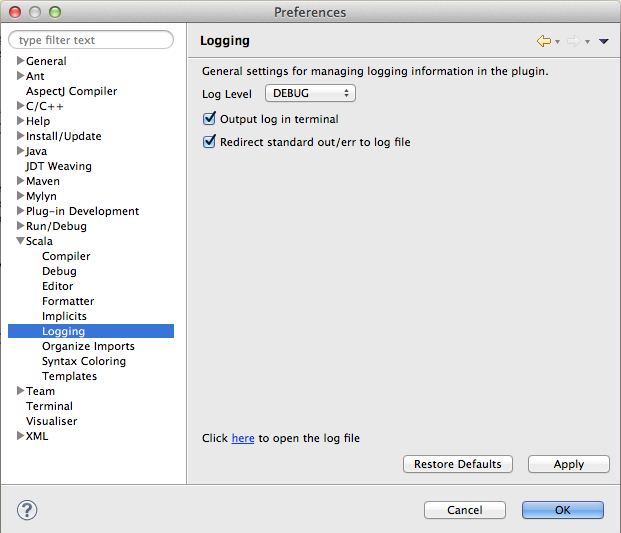

Logging new
Logging isn't likely to be the most wanted feature, and we hope that you won't ever need to know about it. But software can crash, and decent logging can go a long way into understanding the reasons behind a failure. Thus, we have improved the logging infrastructure so that it can be easily controlled by you.
In this page we discuss how you can manage logging in the Scala IDE.
Configuration
You can access the logging settings in the Eclipse Preferences. Click on the Scala item and select Logging. You should see the following page:
By default, the log level is set to WARN. That should be enough for general use, and it should still provide some useful information in the event of an error. Naturally, you are free to change the log level at any time -- remember, though, that increasing logging may noticeably decrease performance.
All logging information is stored in a scala-ide.log file located in the ${workspace}/.metadata/.plugins/org.scala-ide.sdt.core/ directory, where ${workspace} is the directory provided when starting up Eclipse -- i.e., your Eclipse workspace. This file can grow up to 10MB, at which point it automatically rolls over. You can easily check the log's contents at any time by clicking on the link at the bottom of the Logging preferences page.
By default, standard output and standard error are redirected to the log file. This makes it easy to gather all debugging output in one place. However, when debugging or working with other plugins you may want to keep stdout and stderr out of the logs, so make sure to uncheck the option.
Should you so desire, you can also output all log messages directly to the terminal. Be aware that in order to do so you must start Eclipse from the command line. For example, you can start Eclipse from the command line with the following on Mac OSX:
$ /Applications/eclipse/Eclipse.app/Contents/MacOS/eclipse